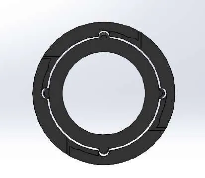
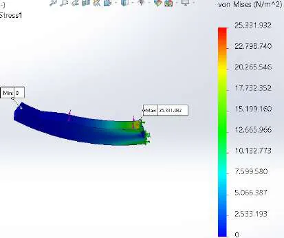
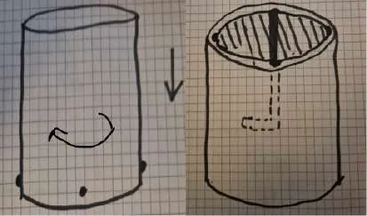
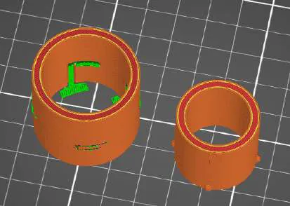
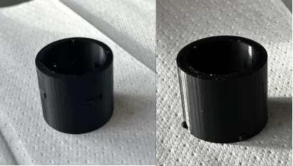

Course 62616 Plastics Technology · DTU · team of 6
PLA Bistable Lock Mechanism
A two-part printed lock you push and twist. A thin plastic beam bends out of the way and springs back, so the lock rests unloaded both open and closed.
- Context
- Course 62616, DTU
- Team
- 6 people
- My role
- Sketches, beam analysis, CAD, print
- Tools
- SolidWorks, FDM printing
- 25.3 MPa
- simulated peak stress (yield 26)
- ~1.5 mm
- beam deflection at 50 N
- 2
- unloaded rest positions
Brief and design
The brief: a mechanism that rotates or translates and in doing so bends a plastic beam; the beam must be unloaded again once the motion is done, there must be two unloaded rest positions, and it must be made in PLA without exceeding its 26 MPa yield strength.
Our answer is a two-part lock. A smaller toothed cylinder slides into a larger one and is then twisted. The twist pushes a thin beam aside, and the beam springs back once the tooth has passed. Both the open and the locked positions leave the beam unloaded, which avoids creep in the plastic.


Analysis and results
- Beam theory by hand (cantilever cases, E = 3.1 GPa for PLA): about 1.3 mm deflection under a 50 N load.
- SolidWorks simulation of the same load: about 1.5 mm deflection and a peak stress of 25.3 MPa, just under PLA's 26 MPa yield, so the beam stays elastic.
- Printed at 100 % infill; the two parts fit and lock.


My part
I worked to the specification with the team: iterated sketches, analysed the deformed and undeformed regions of the beam, then the CAD and the physical print.





